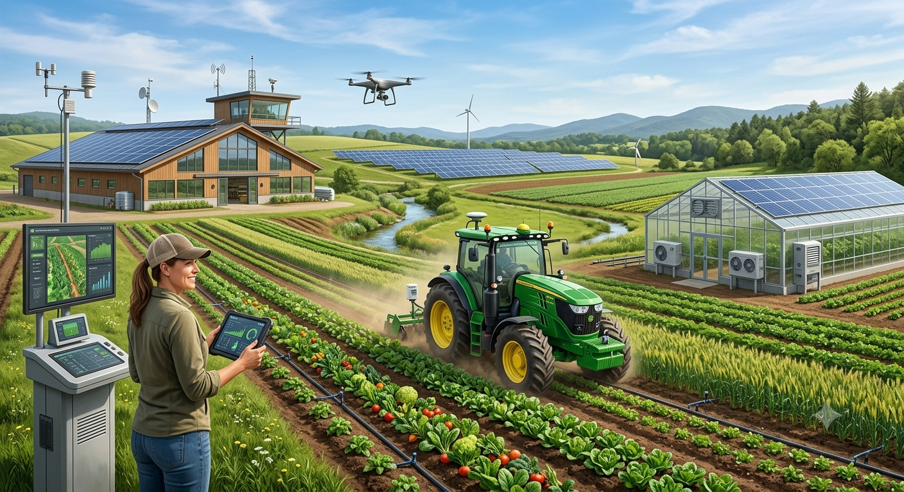

AgroEduca🌱
Compartilhando tecnologia, inovação no campo e sustentabilidade.

MEU PRIMEIRO POST
Por: Debora Cristina
Bem-vindo ao AgroEduca! Um espaço para aprender sobre Agrotech — tecnologia aplicada ao campo.